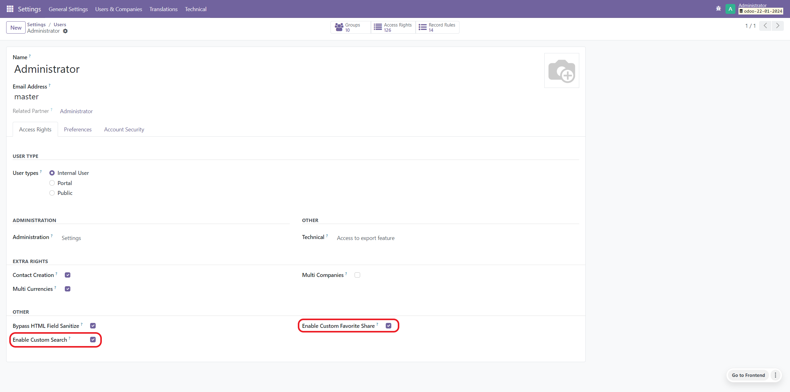
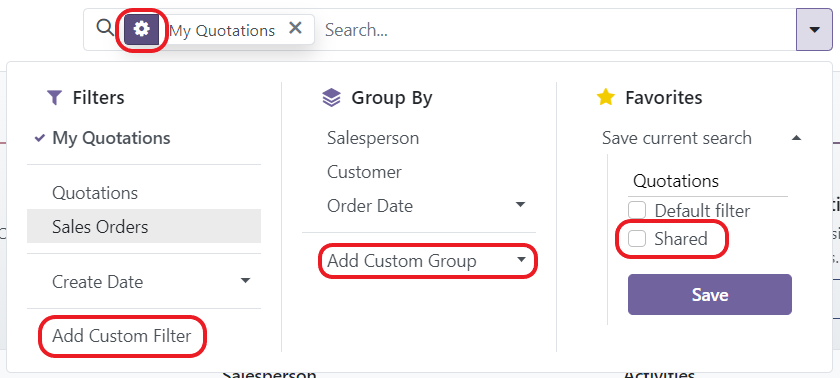
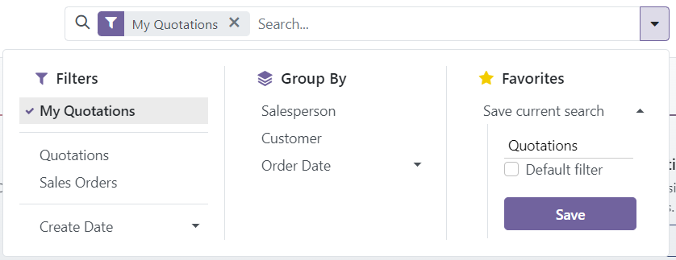

Enhanced Security Search lets you decide who may build their own searches in Odoo. Users outside the "Enable Custom Search" group keep the predefined filters, group-bys and favorites, without the controls that let them write arbitrary domains or save new favorites.
This module simplifies the search interface; it is not an access control over data. Record rules and access rights remain the only protection of the records themselves.

Custom search enabled:

Custom search disabled:

If you're interested in contributing, please visit the GitHub repository @ github.com/VictorHachard/odoo-modules
If you encounter any issues, please visit the GitHub repository issue section @ github.com/VictorHachard/odoo-modules/issues
Developed and maintained by HVG Solutions. For help, a custom development or an Odoo project, contact us at contact@hvg-solutions.com.